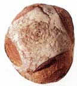
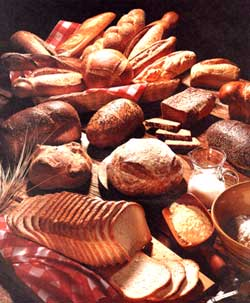
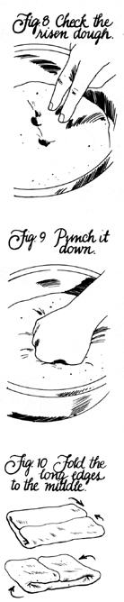
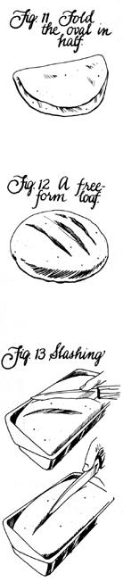

MOTHER'S HANDBOOK
Masters of the living yeast are the kitchen's true magicians.
A WOMAN WHO BAKES bread can comfort children with a glance, converse with elms, invent new colors. A man who bakes bread-why, he can gentle animals with a touch, talk to teenagers, look good in his undershirt. Or so we are likely to believe. Such is our reverence for this elemental food that the people who create it seem to tap an ancient communal memory, to possess powers that the rest of us can only dimly imagine.
Bread pervades our language and literature, a metaphor for physical and spiritual sustenance.
We petition for our daily bread, live not by bread alone, break bread together. (The word companion derives from the Latin companio, "one who shares bread.") The satirist Juvenal lamented that his fellow Romans cared only for "bread and circuses," a concern we still share: A modern man who is short of bread could use a little dough to see him through.
And substance preceded the image. Ten thousand years ago, the domestication of wild grasses made the domestication of humanity possible. Freed from the necessity to roam constantly in search of food, humans could settle down and invent civilization. Heroic images of fur-clad, spearwielding hunters notwithstanding, we soon fed ourselves primarily on grains.
Before bread, grain was dried on hot rocks or boiled into a paste or gruel. By the late Stone Age, flat breads were common. (Remnants endure: Mexican tortillas, Chinese pancakes, Indian chapaties.) The Egyptians began making leavened bread about 4000 B.C., probably when a neglected gruel, contaminated by wild airborne yeasts, fermented and rose. With characteristic virtuosity, the Greeks became master bakers who served up 62 varieties.
Both Greeks and Romans preferred white bread, the food of the upper classes; slaves and servants ate the dark. Since extra labor was required to refine dark flour into light, it was more expensive and thus a mark of status. Europe followed the classic tradition. For centuries, coarse, hard rye bread was the daily fare of peasants-often secondhand, at that. The masters ate their dinners served up on rock-hard slabs of bread, called trenchers. When they'd eaten their meat and gravy, they fed the sopping trenchers to the servants and the dogs.
Dark bread continued to get bad press until the Reverend Sylvester Graham, 19th-century reformer and grump, began a campaign to popularize whole grains. They were healthy, he nagged; they alleviated a wide range of digestive problems. Besides, milling the bran and germ from the flour was tantamount to "putting asunder what God has joined together." (Whole-wheat flour is often called graham flour, in the good reverend's honor; graham crackers are another namesake.) With the publication in 1974-a mere hundred years later-of an article in the Journal of the American Medical Association, touting the benefits of dietary fiber, the respectability of wholegrain bread was assured.
During the Industrial Revolution, baking bread became less of a private enterprise and more of a commercial one. Even so, packaged bread was not plentiful in grocery stores until 1930; and until the beginning of World War II, 50% of the baked goods consumed were produced at home. Now 95% are store-bought.
In the 1970s and 1980s homemade bread has enjoyed a minor renaissance. Lured by an honest, unadulterated loaf, by the fragrance and taste of perfectly fresh bread, by the sensuous pleasure of working the dough, by the pride of accomplishment, by the sense of participating in an art as old as humanity itself-more and more of us are doing it ourselves.
The simplest loaf contains just flour, water, yeast and salt. Almost always, the flour is made from wheat (Fig. 1). Alone among cereals, wheat contains substantial amounts of gluten-long, sprawling molecules of protein that, with the addition of water and handling, mesh into an elastic network that can stretch and expand, permitting the loaf to rise. Other grains-rye, oats, corn, millet-may be added for flavor, texture and nutrients. But if we are to have leavened bread, we must have wheat. (Rye has only traces of gluten; used alone, it will produce a loaf hard enough to break a peasant's tooth. Other grains have none. Bioengineers hope to be able to transfer gluten's genetic codes into corn, millet and sorghum, a development that would revolutionize bread making.)
Yeasts are fungi, one-celled plants-160 species of them. The Saccharomyces cerevisiae are particularly useful to brewers and bakers. In an anaerobic environment, like bread dough, they metabolize starches and sugars, giving off carbon dioxide and alcohol as by-products. As the bubbles of C0 2 increase and expand, they stretch the gluten, and the loaf rises.
Since the Pharaohs, bakers have transformed flour and yeast into bread by the same ritual. 1) Making the dough. All the ingredients (except part of the flour) are combined and beaten, by hand or (these days) by machine, to mix the dough and start developing the gluten. 2) Kneading. Pummeling the dough, stretching and folding it, disperses the yeast, develops the gluten and evaporates the alcohol. At this stage, the remaining flour is worked into the dough. 3) Rising. While the dough sits in a warm place, the yeast multiplies and produces carbon dioxide, and the dough rises. Then it's deflated and allowed to rise either once or twice more. 4) Baking. In a hot oven, the yeast dies and the elastic gluten solidifies, now able to support all other ingredientsthe character of which will govern the taste and texture of the bread.
Flour. Three principal types of wheat dominate the 600 million acres planted to the crop worldwide. Hard wheat has a hard ker nel and ample protein, including gluten. It is made into bread flour. Soft wheat, with little gluten, is milled into pastry and cake flours (pastries are toughened and ruined by gluten). Durum wheat is so hard that it isn't even good for bread, which must have some elasticity; it becomes pasta.
Whole-wheat flour contains the entire ground-up kernel (Fig. 2): the germ, or embryo, rich in oil, vitamins and minerals; the endosperm, or main body of the kernel, filled with starch and protein (including the gluten); and the bran, or hard seed coat. Compared to white flour, which contains only the endosperm-the germ and bran are milled out and sold separately-whole-wheat is rich in flavor, fiber, nutrients and fat. Alas, fat turns rancid quickly. While white flour is virtually imperishable, whole-wheat keeps only about a month at room temperature, or two under refrigeration, before it starts to become bitter. It pays to check the expiration date on supermarket packages, or to question the shopkeeper when buying from bulk bins. The unused portion should be wrapped in an airtight package and stored in the refrigerator.
Because whole-wheat contains heavy, solid particles of bran and germ, it may produce a dense loaf. Thus, many recipes for "whole-wheat" bread call for a portion of white flour, additional yeast or an extra rising.
Whole-wheat pastry flour is milled from whole kernels of soft wheat. With too little gluten for bread, it makes crisp, light biscuits and pastries.
The market supports a greater variety of white flour, since most bread, whether commercial or homemade, is light. By law, white flour must be enriched with niacin, thiamine and riboflavin (the B vitamins that got milled out with the germ).
Bread flour is made from hard wheat, rich in protein and gluten; it makes a high, light loaf. Some brands are treated with ascorbic acid (vitamin C) or potassium bromate, to make the gluten more elastic and more resistant to overworking by heavy commercial machinery. Overkneading dough-which leads to the collapse of the gluten and the failure of the loaf-is rarely a problem for hand kneaders, who give out long before the gluten does. Food processors, however, can overwork dough in a heartbeat.
All-purpose flour is a blend of high-gluten hard wheats and low-gluten soft ones, produced by large mills to satisfy a wide range of baking needs, from pastries to breads. Like most compromises, it does everything adequately and nothing superbly. The unbleached variety works well.
Pastry flour is too gluten-poor for bread.
Yeast. The most common yeast on the market-and the one used in all recipes here-is active dry yeast, universally available in small foil packets of one-fourth ounce each. Alive but dormant, it has been dehydrated and becomes active when dissolved in warm liquid. Freshness is vital; yeast that's past its pull date is a license to fail.
Fat. Butter, margarine, shortening, oil, lard-in small amounts, all add volume (by lubricating the gluten, making it more elastic), tenderness, flavor, moistness and richness. Too little fat will produce a dry, coarse loaf; too much, an oily, crumbly one.
Salt. Saltless bread tastes bland and flat. Although too much damages the yeast and produces a heavy loaf, a little improves the flavor, strengthens the gluten and regulates fermentation.
Sugar. Sweetening in its various forms (sugar, honey, molasses, maple syrup) contributes flavor, tenderness, moisture and a rich, brown crust. It also delays staling. In small amounts, sugar increases the activity of yeast, so it's usually dissolved with the yeast in warm water. But too much upsets the water balance in the yeast cells, at which point fermentation declines sharply. That's why recipes for sweet doughs often call for extra yeast (and why it's a bad idea to add more sugar to the dissolving yeast than the directions sug gest). Except in very sweet doughs, the choice of sweetener doesn't affect the flavor.
Liquid. Although water is the most common liquid, others can be substituted-everything from fruit or vegetable juices to broth or beer. Obviously, flavor varies. Milk makes the texture softer, delays staling and creates a rich brown crust.
Et cetera. Fruits, nuts, seeds, cheese, vegetables, cornmeal, oats, wheat germ-the list goes on for flavor, character and fun.
Assuming a kitchen stocked with the usual measuring cups and mixing bowls, only a few extra tools are required.
Thermometer. Like other living organisms, yeast cares about temperature: too cool, and it will remain dormant; too hot, and it will die. The most useful thermometer is an instant-response one with a metal spike and a gauge that measures from freezing to boiling (Fig. 3). With it you can check the liquid you add to the yeast and the place where the dough rises.
Dough blade. Also called a dough scraper or cutter, this handy tool is a rectangular piece of steel (about 4" X 5") with a wooden handle (Fig. 4). It is useful for kneading dough in the early, sticky stages, for dividing it and for scraping of the kneading surface afterward.
Pans. Bread bakes well in a variety of materials. Most widely recommended are dark metal loaf pans, which absorb heat readily and produce a uniformly brown crust. Shiny metal pans reflect heat and produce pale sides and bottom. (If the baked loaf is removed from the pan and returned to the oven for five or 10 minutes, the crust will brown up nicely.) Glass baking pans also work well; lower the heat by 25°F when using them. Recipes are most apt to call for loaf pans that measure 8" X 4" (medium) or 9" X 5" (large). You'll also need a baking sheet for round peasant loaves.
Oven thermometer. Equally certain are death, taxes and an inaccurate oven thermostat. Considering the odds, an oven thermometer is a good investment, so that you end up with neither a cinder nor a semibaked lump of dough.
Because of yeast's sensitivity to temperature, all ingredients need to be at room temperature (except, of course, the liquid for dissolving the yeast, which should be warmer). If your whole-wheat flour is stored in the refrigerator, take it out in time to warm up; if you've melted butter, let it cool.
Making the dough. Although details vary, there are three general methods of adding the yeast to the other ingredients. Directions vary from cookbook to cookbook and, frequently, from recipe to recipe.
Method 1. Dissolve the yeast in warm (105 ° to 115 °F) water with a small amount of sugar, then add the other ingredients. Older recipes direct you to let the dissolved yeast sit for five to 10 minutes, until it becomes frothy-a means of "proofing" the yeast, or making certain that it's still alive. These days, when yeast is virtually always reliable, this delay is simply unnecessary, unless the pull date has expired or you have some other reason to question the yeast's viability.
Method 2. Mix the yeast with some of the flour and the other dry ingredients; add hot (120° to 130°F) liquid to form a batter, then add other ingredients.
Method 3. Make a sponge: Combine the yeast, half the flour and other ingredients (except fat and eggs), and let it all ferment for several hours or overnight. Then add the rest of the flour and any other ingredients to form the dough.
Regardless of the method, it is vital to check the temperature of the liquid before you add it to the yeast. Once yeast is heat-killed, nothing will resurrect it.
Kneading is like dancing: As long as you've got the rhythm, there's lots of room for individual moves. Do find a work surface that's the right height. You should be able to extend your arms downward with palms resting flat on the surface. Unless you're tall, a kitchen counter is too high; you won't get full power from your arms. Too low a worktable will break your back. Sprinkle the surface lightly with flour, and dump the dough onto it. Dust your hands lightly with flour, and get it on.
Form the dough into a rough ball. Using the heels of your hands, push into the dough, moving it down and away, stretching and flattening it (Fig. 5). Then lift the back end and bring it forward, folding the dough in half (Fig. 6). Give it a quarter turn, and push it out again. Push, fold, turn-the elements of kneading.
As you knead, add sprinkles of flour as necessary, to make the dough workable. Try not to overdo it; the dough will become less sticky as you work it, and too much flour will produce a dry, heavy loaf. It's impossible to specify how much extra flour should be kneaded in, so recipes give a range. Flours absorb varying amounts of water, depending on what type they are, what crop they came from, how they've been stored and whether the day is humid or dry.
At first, when the dough is especially sticky, try for a fairly light touch, so your hand doesn't become stuck. In these early stages, a dough blade is helpful; use it to lift, fold and turn the dough. As it begins to firm up, your strokes can become more aggressive.
Kneading isn't a delicate operation; put your whole body into it. Some apparently rational experts even suggest that you periodically lift up the ball of dough and slam it down on the table, insisting that it will do the dough (and you) a world of good.
When can you stop? The standard estimate is 10 minutes to knead one loaf, but time varies with the flour, the weather and the energy of the baker. Most cooks judge by look and feel.
Well-kneaded dough loses its stickiness (whole-wheat stays tackier) and becomes smooth and shiny. Small blisters sometimes appear on the surface, especially on white dough. Most important, the dough (like the gluten) becomes elastic: It can be stretched into a thin sheet without tearing (Fig. 7). As you knead, it begins to resist your advances; when you push, it springs back.
During rising, the yeast does the work. All you have to do .is provide the right environment for the yeast to multiply and metabolize.
Lightly grease a large mixing bowl-large enough to allow the dough to double in size. Round the dough into a ball; place it in the bowl and turn it once (to grease the surface lightly, so that it doesn't form a crust); cover the bowl with plastic wrap, a platter or a damp towel; and set it in a good rising place: free of drafts (which will make the dough rise slowly and unevenly), with a temperature of about 80°F. Slightly cooler will slow the rising; slightly warmer will speed it up. Just try to stay in the 80° range. (Whip out your trusty thermometer.)
Good rising places range from the ordinary to the whimsical. Some cooks put their dough in a gas oven; with the door closed, the pilot light supplies just the right warmth. (Make sure to test your oven; many are far too hot.) Others turn their electric oven to 200°F for one minute, turn it off, then insert the dough. A few place it atop a refrigerator or water heater or on a washer or dryer that's been used recently. Some set it on a heating pad; a few lay it on a water bed. (Where does your cat nap? It's probably a warm, draft-free place.)
Normally, dough rises until it doubles in bulk, which takes about an hour. To test whether it's ready, poke two half-inchdeep holes in it with your fingers (Fig. 8). If the holes start to fill in, more time is needed. If the indentations remain and the dough feels spongy, your time is up.
Now punch the dough down (Fig. 9): Double up your fist and push it into the center of the dough (gently or viciously, as your conscience dictates). The dough will collapse as the gas sighs out. Knead for a minute or two to force out the rest.
Most recipes direct you to shape the dough into a loaf and put it in the pan for the final rising (or "proof"). Some call for a second rising in the bowl before the proof (a total of three risings). Whatever the recipe says, you can always opt for that additional rising. There's plenty of life in the old fungus yet, and the texture will become finer with each rising. Since there is more yeast to do the work, second and third risings take half to two-thirds as long.
Once you decide to let well enough alone, the dough needs to rest for two or three minutes, so the gluten can relax. Then shape the loaf-a process as individual as the bakers who do it. You can simply pat the dough into a roughly loaflike shape and place it in the pan. Or roll it flat with a rolling pin and then roll it up like a jellyroll. You might pat the dough into an oval, fold each of the long edges into the middle, then fold up the ends (Fig. 10). A simple method is to fold the oval in half (Fig. 11), pinch the seam tightly to seal it, tuck the ends under, and place it, seam side down, in the pan. For a freeform peasant loaf, just shape the dough into a round, flatten it slightly on top, and set it aside to proof (Fig. 12).
The dough is now ready for its final rising. Set it in the same kind of place where it rose before, until it doubles in bulk. (Try to select your pans so that the kneaded dough doesn't fill them more than two-thirds full; otherwise, it's likely to rise more than an inch above the pans-the desirable height.) If your loaf has risen particularly well, and looks as if it's bursting at the seams, make a few slashes across the top with a very sharp knife or razor blade (Fig. 13). If the loaf continues rising in the oven-a phenomenon known as oven spring, a baker's joy that occurs when everything has gone absolutely right-the slashes will allow the loaf to expand without tearing.
Try not to open the oven door for the first 15 or 20 minutes; you can instantly lose as much as 25% of the heat. Second, rely on your own on-site evaluation of whether it's actually done.
The top crust should be golden brown. Now check the bottom: With oven mitts on, turn the loaf out into one of your hands. When it slides out easily, that's a good sign; as bread cooks, it shrinks away from the sides of the pan. Tap the bottom crust with a fingernail; the loaf should sound hollow. A dull, liquid thud says you're holding uncooked dough. Squeeze the sides. If the bread bounces back, it's probably done. If it retains the impressions of your fingers, it's probably not. If your loaf fails these tests, return it to the pan and the pan to the oven for five minutes, then check again. Cool the finished loaf on a wire rack; on a solid surface, escaping steam will condense and produce a soggy bottom.
A really silly piece of advice: Don't slice the bread until it's completely cool-that is, for two or three hours. Sure, right. OK, at least wait 30 minutes, if you can, and resign yourself to a soggy texture even then. (It will improve in a couple of hours.) A still-warm loaf doesn't cut so much as it tears-a minuscule consideration when compared to the allure of fresh, warm bread. Whenever you eat it, don't wrap the remainder in any airtight way until it's completely cool; otherwise, the steam will soften the loaf and encourage mold.
Whole-Wheat Batter Bread
Batter breads involve no kneading; the gluten is activated solely by beating. Thus, their texture is open and coarse. Their flavor, however, can be exceptionally good.
1 package active dry yeast
1'/4 cups warm water (105°-115°F)
2 tablespoons honey
2 tablespoons butter or mar garine, melted and cooled to room temperature
1 teaspoon salt
1 1/2 cups white flour
1 1/2 cups whole-wheat flour
In large mixing bowl, add yeast to water and stir to dissolve. Add honey, and stir until dissolved. Add butter or margarine, salt, white flour and 1/2 cup wholewheat flour. With electric mixer, beat on low speed until blended. Then beat at high speed 1 minute. Scrape bowl; beat 1 minute more. Stir in remaining flour with wooden spoon. Cover and let rise until doubled in bulk, about 45 minutes.
Grease an 8" X 4" loaf pan. Deflate batter by stirring 30 strokes with a wooden spoon. Spoon batter into pan. Cover and let rise 30 to 40 minutes, or until batter rises just to rim of pan (not above the rim, for batter breads). Bake in preheated 375°F oven for 40 minutes, or until done. Cool on wire rack. Makes 1 loaf.
Basic White Bread
1 package dry yeast
1 teaspoon sugar
1/4 cup warm water (105°-115°F)
3 tablespoons sugar
1 tablespoon salt
1 3/4 cups milk, room tem perature
3 tablespoons butter, melted
6 to 6 1/2 cups unbleached or bread flour
In large mixing bowl, stir yeast and 1 teaspoon sugar into water until dissolved. Add remaining sugar, salt, milk, butter and 1 1/2 cups flour. Beat on medium speed with electric mixer 2 minutes, or 200 strokes by hand. Stir in enough remaining flour to make a workable dough, adding flour by quarter cupfuls toward the end. Turn dough out onto lightly floured surface, and knead 10 minutes, or until smooth and elastic. Place in greased bowl, turning once to coat. Cover and let rise in warm, draft-free place until doubled in bulk, about 1 hour. Punch down, knead 2 or 3 minutes, and divide in half. Let dough rest 2 or 3 minutes, then shape into loaves and place in 2 greased 8" X 4" loaf pans. Let rise until doubled in bulk, about 45 minutes to an hour. Bake in preheated 375°F oven 35-40 minutes, or until done. Makes 2 loaves.
Honey Grain Bread
2 packages dry yeast
1/2 cup warm water
(105°-115°F)
1/4 cup honey
1/4 cup brown sugar, firmly packed
1 3/4 cups milk, room temperature
1/4 cup butter, melted
1 tablespoon salt
1 1/2 cups rye flour
2 1/2 cups unbleached or bread flour
2 1/2 to 3 cups whole-wheat flour
1/2 cup raisins
In large mixing bowl, stir yeast into water until dissolved. Stir in honey, brown sugar, milk, butter, salt, 1 cup rye flour, 1 cup white flour and 1 cup wholewheat flour. Beat at medium speed with electric mixer 2 minutes, or 200 strokes by hand. Stir in raisins, remaining rye flour, remaining white flour and enough whole-wheat flour to make dough. Turn out onto lightly floured surface. Knead 10-15 minutes, or until smooth and elastic. Place in greased bowl, turning to coat. Cover and let rise in warm, draft-free place until doubled in bulk, about 1 1/2 hours. Punch down, and knead for 2 or 3 minutes. Divide in half, and let rest for 2 or 3 minutes. Shape into round loaves, and place on a large baking sheet that has been greased and sprinkled with cornmeal. Let rise until doubled in bulk, about 1 hour. Bake in preheated 375°F oven 35-40 minutes, or until done. Cool on racks. Makes 2 large loaves.
ALTHOUGH THE ACTUAL work of bread making is relative ly brief, the risings and baking keep you in or around the house for three hours or more. With occasional help from modern technology, it doesn't have to take that long.
1. Food processor. A food processor doesn't provide much in the way of sensuous pleasure, but it's fast. Instead of a minimum of 10 minutes for hand kneading, the machine takes about 45 to 60 seconds.
While machines vary (consult the owner's manual), the general pattern is this: Dissolve the yeast in warm water. Place the dry ingredients in the work bowl, and pulse to blend. Add dissolved yeast; then, with machine running, add other liquid ingredients slowly until the dough forms a solid mass. Process 45 to 60 seconds more.
2. Fast-acting yeast. Recently, genetic engineers have developed new strains of yeast that cut the rising time in half (Fleischmann's RapidRise and Red Star's Quick-Rise). Since the risings are the most time-consuming part of the process, the savings are significant.
3. Microwave.
Few people would find bread baked in a microwave acceptable; the dough forms no crust, and it comes out of the oven the same color as when it went in. But some longtime bakers use these ovens to raise their bread, thus reducing rising time by twothirds. Consult your manual, but here's how it generally works:
Microwave three cups of water in a one-quart measure until it's steaming hot. Cover the bowl of dough with a towel, and put it in the oven next to the water. Microwave at 10% power (the lowest possible setting) for 18 to 20 minutes. Check the risen dough in the usual way.
When this technique fails, it's usually because the oven can't maintain a low enough power. If the microwave can't be set at 10% if, for example, it registers only low, medium and high-forget it. You'll end up with an unrisen, semibaked blob.
Among both expert bakers and devoted eaters, evaluations of these techniques vary widely. Some argue that all three compromise flavor, texture and keeping quality; others maintain that the final loaf is every bit as good as a traditional one. Considering the time savings involved, it's probably worth your while to find out what you think.
|
 |
 |
|
|
|
 |
 |